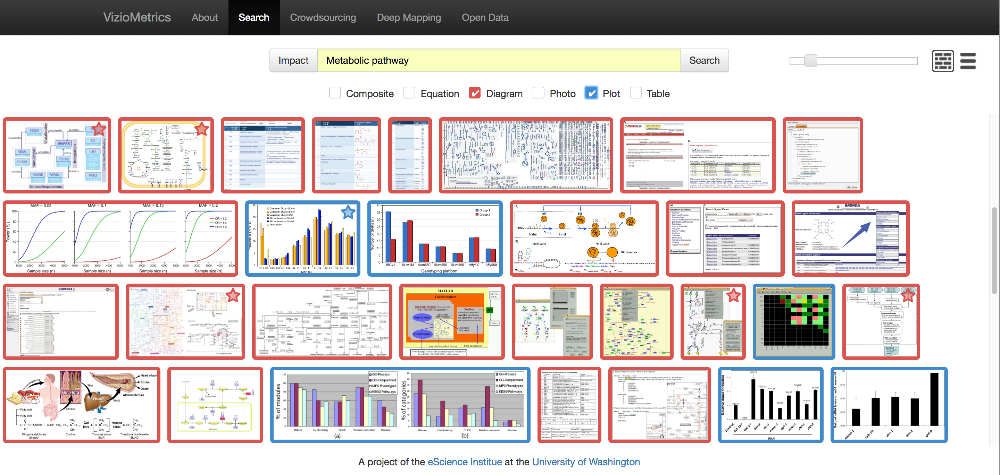
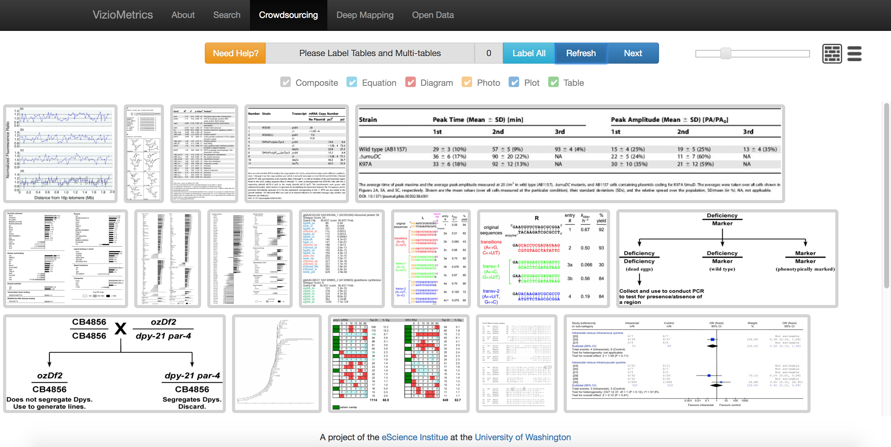
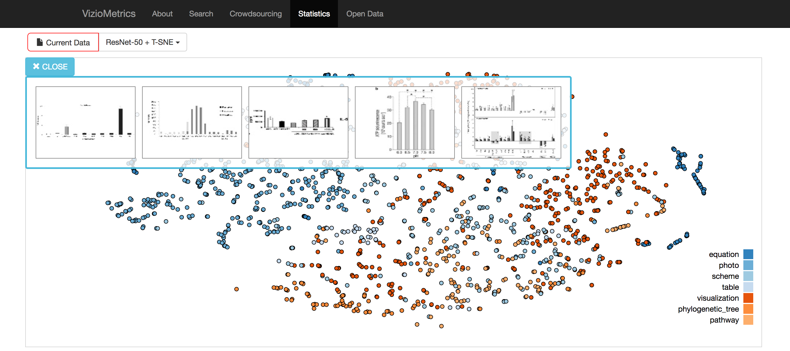
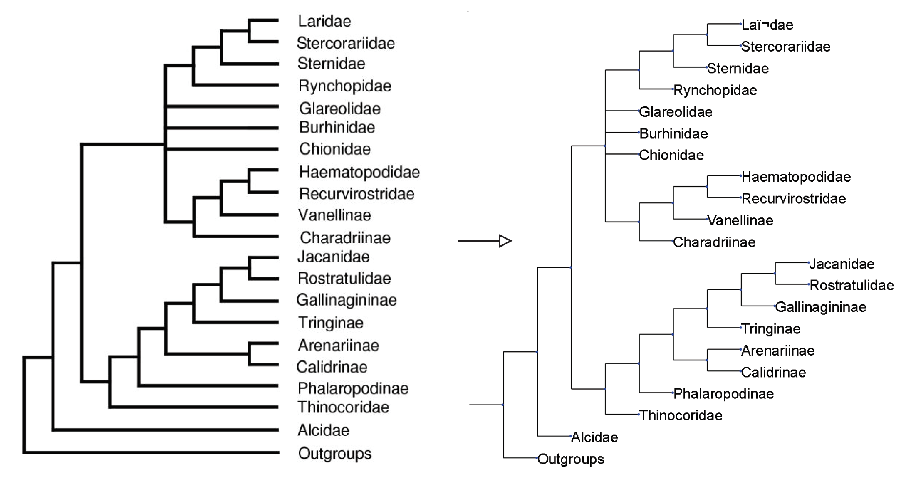

VizioMetrics: Mining the Scientific Literature
The visual cortex is the highest-bandwidth information channel into the human brain and humans are known to better retain information presented visually. The figures in the scientific literature therefore would appear to play a critical role in scientific communication. The discovery of the structure of DNA was largely a visual argument based on the images produced by X-ray crystallography; indeed, Gibbons argues that the act of producing the visualization of the structure represents the discovery itself. The first extra-solar optical images of planets amplified the nascent subfield of astronomy focused on planet-hunting. Medical imagery of biological processes at scales below that which can be detected using conventional optical methods are providing new insight into brain function. In all fields, key experimental results are summarized in plots, complex scientific concepts are illustrated schematically in diagrams, and photographic evidence are used to provide insight at scales and in locations not available to the human eye. The quantification of science and the rise of big data has increased the need for visual representations of the data, models, and results.
In the 1950s, researchers like Eugene Garfield and De Solla Price recognized the importance of citations in organizing and searching the scientific literature, but the process for making this information useful at scale was painstaking. We see an analogy with the current role of the visual literature. There is clear value in extracting and analyzing figures to understand its role in scientific communication and impact, just as there is clear value in analyzing the citation network in isolation. The citation network tells us how ideas are related; visual representations tell us how ideas are communicated. Figures from related groups, authors, and fields share a `DNA' that can reveal how information is conveyed.
We adopt the term viziometrics to describe this line of research to convey the shared goals with bibliometrics and scientometrics. As with bibliometrics, viziometrics uses citations to measure impact, but focuses on relating impact to the patterns of figure use. We analyze theses patterns within the papers (specifically, the distribution of various figure types) in order to understand how they may be used to more effectively communicate ideas. We developed a figure processing pipeline that automatically classifies figures into equations, diagrams, plots, photos, and tables. By integrating the figure-type labels and article metadata, we analyzed the patterns across journals, over time, and relationships to impact. Our key result is that high-impact papers tend to have more diagrams per page and a higher proportion of diagrams relative to other figure types. A possible interpretation is that clarity is critical for impact: illustrating an original idea may be more influential than quantitative experimental results. We also described a new application to search and browse scientific figures, potentially enabling new kinds of search tasks. The VizioMetrics.org systems affords search by keyword as well as figure type, and shows results in a figure-centric layout. We believe more interesting and useful applications can be inspired by the concept of viziometrics. We also encourage people to use our publicly available corpus and software to explore this area of research and create a new community of interest.
Press and Recognition:
- June 2016: The Economist has written a nice print piece on our arXiv paper.
- June 2016: Top 5 tools of the week voted on LabWorm, a discovery platform that exposes top research tools with the goal of promoting a more open, collaborative and cutting edge science.
- June 2016: MIT Technology Review wrote a nice piece on our project: The First Visual Search Engine for Scientific Diagrams
- Top 5% of all research outputs with social media attention scored by Almetric. 3 news outlets and 155 tweeters.
Figure Use Correlates with Article Influence
Motivated by the increasing need to communicate results across disciplines and with the general public, we study the relationship between the use of figures in the biomedical literature and scientific impact. We hypothesize that an increased use of explanatory figures is associated with increased citations, suggesting that encoding results visually improves communicability. To test this hypothesis, we extract the figures from 200k papers in PubMed and train a model to classify the figures as diagrams, visualizations, photographs, or tables.
The circle makers denote the the results is statistically significant, otherwise the data points are shown by the cross makers. The right shaded area from 2009 to 2014 is considered less credibility because the citation network has well constructed yet. Consistent positive correlation signals are observed from diagram and plot. Increasing positive correlation signals are observed from table. It may forecast a new age of data-centric methodologies for researches in life science. In the other hand, negative correlations of photo density are found during 2005 to 2007, while positive correlations are found in early years with journal bias.
The table shows the mean change in the accrued citations for one standardized unit of change in the independent variables: diagram density, photo density, plot density, table density, and age analyzed by a generalized linear model with a negative binomial error structure. Table density shows the highest Sd. OR when considering same-field citations; whereas it is taken over by diagram density when considering cross-field citations. It indicates the audiences from the same field may prefer articles with visualized quantitative results but the audiences with diver backgrounds may prefer the articles with visualized conceptual content.
VizioMetrics.org
VizioMetrix is designed to be an initial suite of tools in support of viziometrics. VizioMetrics includes functionality for three groups of users: (1) academic users performing search tasks, (2) researchers who specialize in computer vision for document understanding, and (3) scientometricians interested in understanding general communication patterns across the literature.
Figure-centric Search Engine
Figure Annotator
Deep Mapping of the Visual Literature
Build a Tree of Life from a Phylogenetic Forest
Hello 911: Visualizing Crimes in Seattle
The purpose of this information visualization project is to analyze the various crime, accident and offence incident data provided by the government of Seattle to do predictive analysis or preventive analysis on these incidents. Our target users are Seattle residents, Law enforcements groups and other related parties. Our goal through this visualization project would be to help determine if there is a pattern in the occurence of these incidents in terms of place, time, sunrise, sunset time, day and night length etc. We also want to provide pragmatic and intuitive suggestions to the users through our visualization.
CarbonShopper, Augmented Reality Application on Display Goggle with Head Camera
Protecting the environment is quickly becoming one of the most important topics of today’s world. Yet while reducing greenhouse gas emissions is a must, people continue to follow environmentally harmful habits for reasons such as ignorance, laziness, and the inability to see the impact they are making. CarbonShopper helps users make the most environmentally friendly choice while shopping by providing information about resource use, comparing it to similar products, and helping users keep track of their purchase history in order to improve over time.